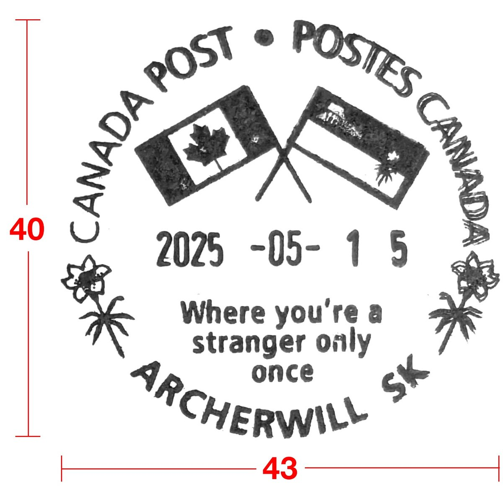

Archerwell PO pictorial cancel
Where You
- Status
- Active
- Run dates
- ? to present
- Design
- "Where You"re a Stranger Only Once"; flag of Canada and Saskatchewan
- Ink colour
- Black
- Designer
- Unknown
- Post office
- Archerwell PO
100 Hwy 35
Archerwill, SK
S0E 0B0 - Subjects
- flag
Collect it by mail. Send your stamped covers, with a stamped return envelope, to the post office address above. How to collect pictorial cancels by mail · en français
 Spalding POWhere friends meet
Spalding POWhere friends meet Wadena POInc. 1912
Wadena POInc. 1912 Watson POHOME OF THE ORIGINAL SANTA CLAUS DAY
Watson POHOME OF THE ORIGINAL SANTA CLAUS DAY Englefeld POHome of the Hogfest
Englefeld POHome of the Hogfest Mozart POMozart silhouette, maple leaf, musical note
Mozart POMozart silhouette, maple leaf, musical note